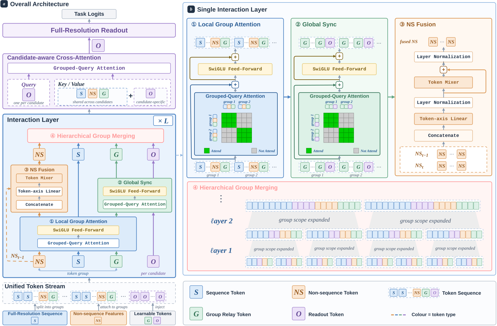
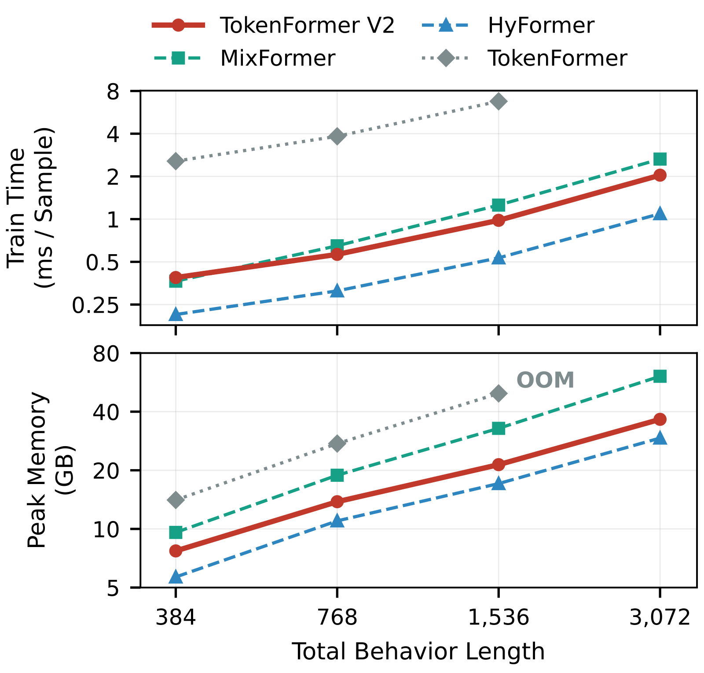
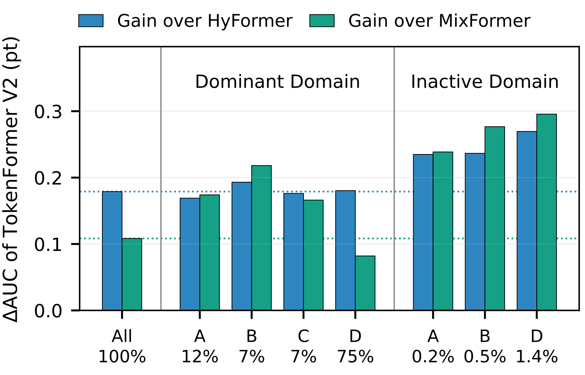

目录 · 7 节
1现有统一骨干把历史压到哪了2组里看细，组外只走窄通道3走一遍：1,536 条历史怎么过三层4公开评测上，效果和费用怎么一起变5更长、更偏的历史，以及线上的账6这对做统一推荐骨干的人意味着什么7局限1,536 条行为想一条条看，计算却会按平方涨：TokenFormer V2 怎么拆开分辨率和交互密度
你要判断一个用户点进广告之后会不会转化。这个人在四个行为域里留下了很长的记录，模型最多会看最近 1,536 条。附近几条动作合在一起，才看得出一种单独看任何一条都说不清的意图。你希望模型把每条记录放在周围事件和当前请求的上下文里看一遍，再决定哪些对这次预测有用。
可服务预算很紧，把这 1,536 条放在一起做密集 self-attention，代价会按长度的平方往上涨。为了省计算，近期的统一推荐骨干常常先把历史压成一份更短的摘要。OneTrans 把字段和行为放进同一条因果流，越往深层，留下参与计算的行为表示越少。HyFormer 和 MixFormer 用特征导出的 query 把历史聚成紧凑的状态，后面的特征交互就在这份摘要上做。预测阶段最后对不上每一条被编码过的行为。
这篇论文做的是工业推荐里的统一骨干，要解决的就是这个分辨率和计算量的两难：细建模长历史太贵，压成摘要又会限制预测能用到的证据。它提出 TokenFormer V2，把表征分辨率和交互密度拆开。每条被留下的行为在编码全程都保留自己的 token，细交互只在组里做，组与组之间走两条窄的通信路径，最后的预测仍能直接读到每一条编码过的行为。在腾讯广告算法大赛 2026（TAAC 2026）的公开评测上，相对最强基线 MixFormer，它的 AUC 提高 0.10 个百分点，前向 FLOPs 只有对方的 19.5%。放到微信视频号广告的真实流量里，相对生产模型，GMV 统计显著提高 2.33%。
把表征分辨率和交互密度拆开，细粒度历史不必先被压短才能进预算；线上 2.33% 的 GMV 提升，对照的是生产模型。
现有统一骨干把历史压到哪了
统一推荐骨干要把两件事放进同一个模型：从行为序列里读兴趣，以及在用户、候选、请求这些不按时间排列的字段之间做交叉。作者此前的 TokenFormer 已经把字段、行为、目标放进同一条因果流，但浅层仍用全量注意力，二次代价还在。OneTrans、HyFormer、MixFormer 则用压缩来换速度：要么减少深层还能看见的行为表示，要么先把历史聚成短的 query 状态。
回到这条最多 1,536 条的历史。如果附近几条动作必须合在一起看才清楚，压缩发生得太早，后面的层就再也回不到那几条各自的表示。TokenFormer V2 要保住的，正是这份还可以被直接读到的个体证据。它给这个性质起名叫 full resolution：预测阶段仍能直接注意到每一条编码过的事件。
组里看细，组外只走窄通道
要保住每条行为，又不能让所有 token 两两算注意力，就得规定谁和谁能直接交互。TokenFormer V2 把行为序列切成连续的组，每组再分到一部分非序列 token（NS，装着用户、候选和请求字段）和一组学出来的组中继 token。组内做密集的 Local Group Attention：每条行为表示会纳入邻域事件和字段上下文，字段 token 也会被这一段历史更新。
组与组之间不靠再做一次大范围注意力。NS Fusion 把本层进来的字段表示和各组刚更新过的版本拼在一起，沿 token 轴做一次可学习的线性混合，再用 RankMixer 式的无参数通道块重排做残差，然后分回各组，让下一层的每个组都能用到其他片段补进来的字段上下文。RankMixer 原本是做字段 token 混合和逐 token 前馈的。Global Sync 则让组中继 token 和少量读出 token 在一个共享空间里交换信息：中继把全局上下文带回各组，读出 token 为最后的预测积累 query。
深度增加时，相邻组会合并。论文给过一个小例子：两个各有 4 条行为的组合并后，变成一个有 8 条行为的组。每条仍是自己的表示，只是能直接看见的邻居变多了。合并扩大的是交互范围，不是把 8 条池化成 1 条摘要。token 清单在整个层级里保持固定。
最后一步是 Full-Resolution Readout。读出 token 当 query，对全部编码过的行为、字段、中继和读出 token 做候选感知的交叉注意力，再映射到各任务的预测。预测头面对的仍是那一整条还在的历史，而不是一份已经压短的摘要。

如果换成更简单的做法，账单会立刻分开。全程全量注意力能保住分辨率，但代价按平方涨，作者此前的 TokenFormer 浅层就付过这笔账。先压成摘要则省计算，可预测头对不上每一条事件。TokenFormer V2 把细交互留在组内，把跨组通信交给数量少得多的上下文 token。组大小有界时，局部注意力对总 token 数是线性的；组数记为 b 时，均衡分组下这一项大约是全量注意力的 1/b。 Hoot 说
正文已经按默认配置走完 1,536 条历史怎么过三层。这里只追一个还没拆开的问题：历史变长时，局部注意力什么时候按线性涨，什么时候会按平方涨。下面用同一组示意数字，把历史从 1,536 翻到 3,072，只比较局部注意力这一项。
默认 16 组×96 个位置 → 组数不变则每组 192、局部注意力约 4 倍 → 组大小仍为 96 则 32 组、约 2 倍 → 长历史实验未写分组日程，不能反推拧了哪颗旋钮
- 默认第一层 → 16 个组、每组 96 个位置按论文的默认配置，最多 1,536 条行为在第一层分成 16 个组，每组覆盖 96 个位置。局部注意力只在组内算。1536 / 16 = 96
- 固定 16 组 + 历史翻倍 → 局部注意力约四倍示意：如果历史翻到 3,072 条而组数仍是 16，每组就会变成 192 个位置。组内代价按平方涨，192² / 96² = 4，16 个组加起来这一项大约是原来的 4 倍。16 × 192² 是 16 × 96² 的 4 倍
- 组大小仍是 96 + 历史翻倍 → 局部注意力约两倍同一组示意数字：若每组仍限制在 96 个位置，组数就要从 16 加到 32，每组开销不变，局部注意力大约是原来的 2 倍。正文说的「组大小有界时，对总 token 数是线性的」，指的就是这种做法。32 × 96² 是 16 × 96² 的 2 倍
- 长历史实验的耗时 → 不能用来确认分组日程论文把历史放到 3,072 条时，测过训练时间和显存，但没有写明这次实验用的是固定组数，还是限制了组大小。所以图 3 里的增长曲线，不能拿来反推他们当时拧的是哪一颗旋钮。正文未给出 3,072 条时的组数
全程全量注意力会按平方涨。这里算的只是局部注意力这一项，不包括 NS Fusion、Global Sync 和前馈。线性增长成立的前提是组大小有界，不是「只要留下每条行为的 token」。

出处
论文 §3.4：组大小有界时，局部注意力对总 token 数 N 是线性的；均衡分组下为 O(d N^2 / b)。§4.1 默认配置：最多 1,536 条，分组日程 16→8→4，第一层局部跨度 96。§4.3–4.4 把历史放到 3,072，但未写明该实验用的分组日程。翻倍后的 16 组×192 与 32 组×96 为示意对照。走一遍：1,536 条历史怎么过三层
下面按论文第 4.1 节的 TAAC 默认配置走一遍，数字都来自论文，不是另编的示意。四个域拼成一条最多 1,536 条的序列，模型有三层，宽度 192，分组日程是 16→8→4。另外还有 64 个 NS token、32 个组中继 token、4 个读出 token。
第一步，分组。第一层有 16 个组，每组覆盖 96 个位置。64 个 NS 和 32 个中继按组均分，每组再分到 4 个 NS、2 个中继。若这 96 个位置都有行为，组内一共 96+4+2=102 个 token，彼此做双向注意力。所以走完这一步，每条行为表示已经掺进了邻域事件和字段上下文，但还看不见组外的事件本身。
第二步，组外通信。行为 token 保持局部编码的结果，不会被换成一条组摘要。NS Fusion 先把进入本层的 64 个 NS token，和它们在各组里更新后的 64 个版本拼在一起，再沿 token 轴做一次可学习的线性变换，重新得到 64 个 NS token。这样每个输出 token 都混进了各组刚更新过的字段证据。随后用 RankMixer 式的无参数重排做残差混合：把 64×192 的表示改排成 64×64×3，交换前两维后再变回 64×192，等于把各 token 的通道块互相换位。把这 64 个更新后的 NS token 分回下一层各组，每个组拿到的字段上下文就已经带上了其他片段的证据。Global Sync 让 32 个中继加上 4 个读出 token，一共 36 个，在共享空间里做 self-attention：中继把全局上下文带回各组，读出 token 继续为预测积累 query。
第三步，分层合并。第二层把相邻组合并，变成 8 个组，每组直接交互的范围从 96 个位置扩到 192。和前面那个 4 条变 8 条的例子一样：192 条仍然是 192 个 token，没有被池化成一条摘要，只是能直接看见的邻居变多了。这说明合并扩大了交互范围，个体行为仍然各自保留。
第四步，第三层再合并成 4 个组，每组跨 384 个位置。组间通信在每一层都已经发生，所以不必等到最后收成一个组，才把远处信息送过来。到这里，最多 1,536 条行为还是 1,536 条。
第五步，Full-Resolution Readout。4 个读出 token 当 query，对全部编码过的行为以及 NS、中继、读出 token 做交叉注意力，再映射到转化预测。预测头仍然直接对着每一条编码过的行为。
第一层如果把大约 1,536+64+32 个 token 放在一起做注意力，计算按平方走；分成 16 组之后，局部注意力大约是原来的 1/16。这就是「分辨率还在、交互变稀」在账上的意思。
这套拆法是不是都有用，要看拿掉其中一块会怎样。作者每次去掉一个部件，在全部训练数据上重训，得到表 4。表里还有一项注意力输出门控，用在局部注意力和 Global Sync 的注意力输出上。
| 变体 | 测试 AUC | 变化（个百分点） |
|---|---|---|
| TokenFormer V2 | 0.8221 | — |
| 固定 16 组、不合并 | 0.8219 | -0.02 |
| 组内不用 NS token | 0.8212 | -0.09 |
| 去掉 NS Fusion | 0.8217 | -0.04 |
| 去掉 Global Sync | 0.8209 | -0.12 |
| 去掉注意力输出门控 | 0.8218 | -0.03 |
（数字来自论文表 4）
这说明两件最重要的事是：局部编码要有字段上下文，组与组之间要连通。去掉 Global Sync 掉 0.12 个百分点，组内不用 NS token 掉 0.09，都比不合并的 0.02 大得多。消融能证明每个部件都有贡献；它证明不了合并日程本身贡献最大，因为固定 16 组几乎还在同一水平。
公开评测上，效果和费用怎么一起变
TAAC 2026 提供 4710 万带转化标签的曝光，四个行为域记为 A 到 D，测试集是 1230 万条更晚的曝光，用户与训练集不相交。各模型共享输入特征、数据管道、64 维 embedding 表和预测头，稠密参数都在约 1100 万。比的是测试 AUC、log loss，以及每个样本的前向 FLOPs。
| 模型 | 测试 AUC | 前向 GFLOPs |
|---|---|---|
| Transformer | 0.8168 | 32.59 |
| TokenFormer | 0.8198 | 28.52 |
| HyFormer | 0.8204 | 3.13 |
| MixFormer | 0.8211 | 19.75 |
| TokenFormer V2 | 0.8221 | 3.86 |
（数字来自论文表 2）
相对最强基线 MixFormer，TokenFormer V2 的 AUC 提高 0.10 个百分点，log loss 降低 0.40%，前向 FLOPs 只有对方的 19.5%。同一批设置下，推理快 2.6 倍，训练吞吐高 21%。这说明领先不是靠堆更多计算换来的：费用降了一大截，排序还更好。
相对作者此前的 TokenFormer，AUC 提高 0.23 个百分点，FLOPs 降低 7.4 倍，摊销推理延迟降低 6.9 倍。这说明把浅层全量注意力换成分组布局，分辨率还能留下，费用却下来了。
相对标准 Transformer，AUC 提高 0.53 个百分点，FLOPs 少 8.4 倍。和更省的 HyFormer 比，V2 贵一点，3.86 对 3.13 GFLOPs，但 AUC 仍高 0.17 个百分点。这说明完整保留每条行为，也可以落在和 query 聚合模型相近的计算量里，同时把排序做高。训练同一个 epoch、每 4k step 验证一次，V2 在每个测到的检查点都领先；第 4k step 时，就已经分别高出 TokenFormer、HyFormer、MixFormer 0.20、0.27、0.25 个百分点。
更长、更偏的历史，以及线上的账
把四个域的长度同时放大到 384 至 3,072 条，在一张 H20、batch 256、历史全部填满的设置里测训练时间和峰值显存。历史加到 8 倍时，TokenFormer V2 的训练时间增加到 5.3 倍，显存增加到 4.7 倍，和 HyFormer 的 5.1 倍非常接近。到 3,072 条时，它比 MixFormer 训练快 23%，显存少 40%。TokenFormer 在能跑完的长度上要花 6.6 到 6.9 倍时间，到最大长度时超出 96GB 显存。这说明把每条行为都留下，并不必然回到全量注意力那种缩放。

把模型按 3,072 条历史重训之后，TokenFormer V2 仍然领先：相对 MixFormer 高 0.09 个百分点，FLOPs 少 4.4 倍。它默认的 1,536 条配置，已经超过所有对照模型在加倍历史下的结果。默认预算下就已经超过对照模型加倍历史后的结果，不必先把输入翻倍才站得住。
不均衡的用户也不只是被多数域带着走。域 D 主导了大约四分之三的测试曝光，A 到 C 主导的用户，用来看多数域之外还能不能打准。相对 MixFormer，D 主导用户的增益约 0.08 个百分点，A 到 C 主导用户是 0.17 到 0.22，某个域完全没有事件的用户可以到 0.24 到 0.30。相对 HyFormer，有缺失域的用户增益是 0.24 到 0.27。这说明总体那 0.10 个百分点，在多数域之外的用户身上更大。

工业对照放在微信视频号广告的点击后转化率（pCVR）排序阶段。先在历史生产日志上把各模型的稠密参数对齐到约 10 亿，标准配置还共享同一套输入特征。生产上的 TokenFormer V2 把较新和较旧行为放在不同分支里编码，较新的活动分到更深的编码，再用 NS Fusion 和 Global Sync 把分支连起来，最后的读出仍然能看到每一条编码过的行为。
MixFormer-1B 的总体 AUC 是 0.8004，前向 15.3 GFLOPs。TokenFormer V2-1B 是唯一超过它的挑战者，总体 AUC 高 0.0572 个百分点，但费用是 70.2 GFLOPs，比 MixFormer 更贵。这说明十亿参数的生产日志上，精度优势还在，但不能沿用 TAAC 上那条更省计算的对比。去掉 DCN-V2 这类常规模型提供的稀疏输入特征之后，这个叫 TokenFormer V2-1B* 的变体把成本从 70.2 降到 23.1 GFLOPs，降了 67.1%，总体 AUC 增益进一步到 0.0712 个百分点。HyFormer、OneTrans 和 TokenFormer 的十亿参数版本，总体 AUC 都低于 MixFormer。
线上 A/B 的对照是生产模型，不是表 5 里的 MixFormer。两组的特征、训练样本流、出价策略和服务预算相同，只改排序骨干。TokenFormer V2 让 GMV 统计显著提高 2.33%，线上 AUC 提高 0.16%。这说明离线多出来的那一点排序，在真实流量里变成了生意上的增量；它不说明 2.33% 也是相对 MixFormer 的数字。
这对做统一推荐骨干的人意味着什么
先检查你的统一骨干是不是把长历史压成了预测头再也读不到的摘要；如果是，TokenFormer V2 给出了一种已经过线上检验的组织方式：分辨率保留，交互按组控制。
分组日程和两条窄通道是可以直接搬去试的旋钮。TAAC 上 16→8→4 的日程把局部跨度从 96 扩到 384，但 1,536 条行为始终还在。若你更关心服务费用，不要把 TAAC 上那 19.5% 的 FLOPs 直接当成十亿参数生产环境里的账单：微信视频号日志上，标准 TokenFormer V2-1B 比 MixFormer-1B 更贵，真正把费用打下来的是去掉那些稀疏辅助特征的变体。也可以先按主导域和缺失域切开看离线指标，这篇里更大的增益出现在多数域之外。
局限
19.5% 前向 FLOPs 这条对比，只属于 TAAC 上约 1100 万稠密参数、对照 MixFormer 的设定。在约 10 亿参数的微信视频号日志上，标准 TokenFormer V2-1B 的费用是 70.2 GFLOPs，高于 MixFormer-1B 的 15.3；即便是简化输入的 V2-1B*，也仍是 23.1，没有落到对方之下。
线上 2.33% 的 GMV 提升，对照的是生产模型。论文没有写这个生产模型是哪一个，也没有把同一场线上实验拿来和 MixFormer 直接比。
消融是每次去掉一个部件后重训，能证明各块都有贡献，不能证明它们之间如何互相放大。固定 16 组只掉 0.02 个百分点，合并日程在这张表里是最弱的一项。公开评测也只在 TAAC 2026 这一套广告数据上展开。
读完这篇，你觉得
夜读鸮记下了，谢谢你的反馈。
点一下即可，无需登录；再点一次撤回。只统计匿名次数，不记录你是谁。
讨论
欢迎补充实验细节、复现经验或不同看法。需 GitHub 登录。
正在加载讨论…